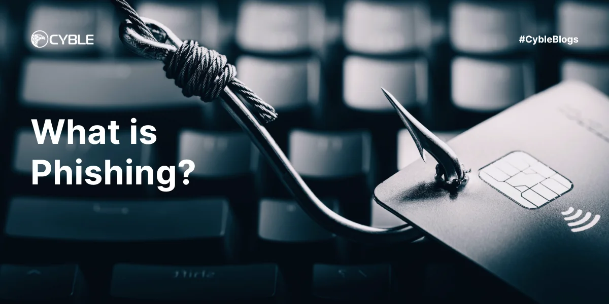

Phishing


Phishing je podvodná technika, pri ktorej sa útočníci snažia získať citlivé údaje (napríklad prihlasovacie mená, heslá, čísla kreditných kariet) tým, že sa vydávajú za dôveryhodnú osobu alebo organizáciu.
Ako phishing funguje:
- Útočník pošle podvodný e-mail alebo vytvorí falošnú webovú stránku, ktorá vyzerá veľmi dôveryhodne.
- Používateľ je vyzvaný, aby zadal svoje údaje, napríklad prihlasovacie meno a heslo.
- Tieto údaje potom útočník zneužije na krádež identity, prístup k bankovým účtom alebo iné škodlivé účely.
Ako sa chrániť:
- Nikdy nezadávaj svoje heslo alebo citlivé údaje na stránkach, ktoré nepoznáš alebo ktoré vyzerajú podozrivo.
- Skontroluj adresu webovej stránky – phishingové stránky často používajú veľmi podobné, ale nesprávne adresy.
- Buď opatrný pri e-mailoch, ktoré ťa vyzývajú k rýchlej akcii alebo k stiahnutiu príloh.
- Používaj dvojfaktorové overenie tam, kde je to možné.
Hlavná stránka